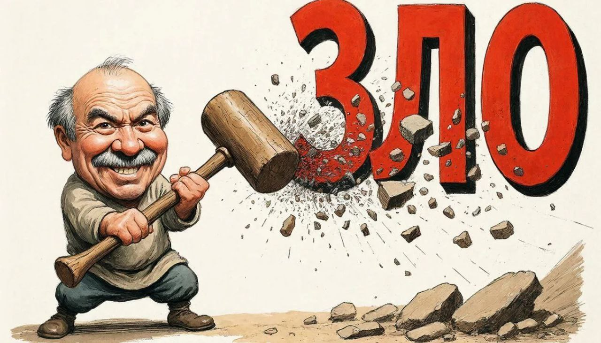

Зачем нужны правила стилистики
Полный курс доступен на платформе "Степик":
Практическая стилистика русского языка для ITОднажды наступает момент, когда ты понимаешь, что тебе есть о чём написать, но, как только дело доходит до словесного оформления мысли, текст не получается точным, грамотным и понятным. Стилистика — это не про красоту, а про двусмысленность. Чаще всего читателю даже очень косноязычно сформулированного текста удаётся добраться до сути, используя контекст и собственные фоновые знания по теме. Но на это тратятся силы и время. Где гарантия, что ваш читатель захочет пойти на такие жертвы и дочитает статью до конца? Скорее всего, он просто найдёт другой источник информации.
Если вам важно, чтобы вас правильно понимали, а ваши тексты читали, не допускайте в своей письменной речи эти ошибки.
Оно тебе надо?
Зачем нужны правила стилистики? Выбери один или несколько правильных ответов.
a. Чтобы текст был красивым и нравился читателям.
b. Чтобы текст был точным и не вводил читателя в заблуждение.
c. Чтобы читатель не оставлял насмешливые комментарии к статье.
Ошибка 1. Смещение логического ударения
Устная речь обладает бесспорным преимуществом перед письменной — интонацией. Она выступает главным инструментом в живом разговоре и способна придать высказываниям разный смысл. На письме передать интонационные оттенки невозможно, и это надо учитывать при построении коммуникации. Даже простое приветствие можно произнести дружелюбно, сквозь зубы, нехотя и много как ещё.
Логическое ударение — это выделение интонацией более важного по смыслу слова в предложении. Пример: Я отправил отчёт. Если голосом выделить «я», то смысл такой: именно я отправил этот отчёт (а мой коллега вообще забыл о нём). Если поставить ударение на второе слово, то говорящий подчёркивает, что выполнил свои обязанности, отправил документ. Если ударение стоит на слове «отчёт», то важно, что был отправлен именно отчёт, а не доклад или служебная записка.
И что же делать, если наша коммуникация происходит в письменной форме? Воспользоваться следующими способами выделения важного по смыслу слова:
1. Выделяющие частицы «именно», «это», «как раз» и др.: Это я отправил отчёт.
2. Противопоставление: Я, а не Вася, отправил отчёт.
3. Восклицательный знак в скобках: Я отправил (!) отчёт.
Этот приём выглядит немного официальным и книжным и на волне спроса на дружелюбный ToV употребляется реже.
4. Выделение шрифтом: Я отправил отчёт.
Этот способ в последнее время не пользуется популярностью. Догадываетесь почему? Из-за технического прогресса. Форматировать текст стало настолько просто, что этой возможностью стали активно пользоваться для структурирования текста и выделения терминов и важных понятий, и обозначение логического ударения аналогичным образом только запутало бы читателя. Напоминаю: цель стилистики — добиться точности высказывания.
5. Изменение порядка слов в предложении.
Как правило, логически выделенным является слово в абсолютном конце предложения. Обычный порядок слов для русского языка такой: подлежащее, сказуемое, второстепенные члены предложения (дополнение, как в нашем примере, или обстоятельство). Если же мы изменим порядок слов, то появятся дополнительные оттенки смысла. Слово в нетипичной позиции часто воспринимается как ударное: Отчёт отправил я. Я отчёт отправил.
А теперь потренируемся.
Суперсет
Сет 1
Пиши, как говоришь, — и всё будет понятно.
a) Верно
b) Неверно
Сет 2
Изменение шрифта — лучший способ для выделения логически ударного слова.
a) Верно
b) Неверно
Сет 3
Задание: Найдите слова, на которых воспринимается логическое ударение. Усильте логически выделенное слово противопоставлением или уточнением.
Примеры:
Хостинг надёжно держит нагрузку (чего мы и добивались). Хостинг держит нагрузку надёжно (в отличие от нашего старого провайдера).
Релиз прошёл в четыре утра (когда нагрузка была минимальна). В четыре утра прошёл релиз (и начались неприятности).
1. Этот патч критически важен для безопасности. Для безопасности критически важен этот патч.
2. Этот скрипт добавляет новый функционал. Новый функционал добавляет этот скрипт.
3. Микросервис обрабатывает запросы. Микросервис запросы обрабатывает.
4. Проблема была на стороне шлюза. На стороне шлюза была проблема.
5. Шифрование гарантирует конфиденциальность данных. Конфиденциальность данных гарантирует шифрование.
Сет 4
Задание: Поставьте выделенное слово в ударную позицию или используйте другие приёмы (кроме изменения шрифта, разумеется).
1. Новые разработчики постоянно задавали одни и те же вопросы.
2. В новой версии фреймворка обнаружили критическую уязвимость.
3. В команде регулярно вспыхивали споры о монолите.
4. Каждую неделю приходилось экстренно закрывать новые уязвимости.
5. Клиенты жаловались на нестабильную работу приложения постоянно.
Ошибка 2. Неверная смысловая связь слов

Это очень распространённый тип стилистических ошибок. Рассмотрим пример: Он удалил лог-файлы специальными инструментами, которые занимали всё свободное место на диске.
Абсурдно, если инструменты занимают всё место на диске. А вот логи могут. Что на самом деле имел в виду автор? А вдруг инструменты действительно оказались слишком тяжёлыми? Читатель не должен тратить время на угадывание авторского замысла, тем более в техническом тексте.
Чтобы избежать таких ошибок, необходимо помнить простое правило: в восприятии читателя объединяются по смыслу ближайшие слова, которые могут объединяться грамматически. Если вы переопределили переменную, то дальнейшие операции с ней будут использовать её новое значение, не так ли? И здесь то же самое.
Итак, для исправления двусмысленности просто изменяем порядок слов в предложении, перемещая связанные по смыслу слова ближе друг к другу: Он удалил специальными инструментами лог-файлы, которые занимали всё свободное место на диске.
Тренируемся, ребята.
Суперсет
Сет 1
Ошибочная смысловая связь слов — крайне редкая ошибка.
a) Верно
b) Неверно
Сет 2
В восприятии читателя объединяются по смыслу крайние слова в предложении, чтобы высказывание было целостным и законченным.
a) Верно
b) Неверно
Сет 3
Задание: Прочитайте предложения. Есть ли в них ошибки? Исправьте их, если они есть, изменив порядок слов.
1. Разработчик запустил сборку на сервере с большой мощностью, которая внезапно завершилась с ошибкой.
2. Он получил доступ к базе через уязвимость в веб-интерфейсе, которая содержала конфиденциальную информацию.
3. Программист исправил баг в основном модуле приложения, который появлялся только по понедельникам.
4. Мы зашифровали месседж современным алгоритмом, который нельзя было расшифровать без ключа.
5. Мы перенесли данные в облачное хранилище с настройками публичного доступа, которые весили несколько терабайт.
Вывод: если в предложении есть слово «который», то лучше лишний раз проверить, не относится ли оно по недосмотру не к тому слову, к которому вы его планировали отнести. Слово «который» будет связано по смыслу с ближайшим словом в Сетящей грамматической форме.
Ошибка 3. Неправильное понимание значения омоформы
Омоформы — это совпадающие грамматические формы одного и того же слова. Чаще всего совпадают формы именительного и винительного падежей.
Рассмотрим пример: Добро побеждает зло. Так что же побеждает и как мы это определили? Можно, конечно, сослаться на контекст и фоновые знания, но ещё есть правило, соблюдение которого сделает текст более ясным и понятным.
Порядок слов в русском языке нефиксированный, то есть подлежащее необязательно должно стоять перед дополнением. Понять смысл обычно помогают падежи: Вася побеждает Диму. Диму побеждает Вася. Но когда словоформы совпадают, возникает путаница, разобраться в которой помогает порядок слов: слово впереди воспринимается как подлежащее, а второе как дополнение. Поэтому в примере про добро и зло первое побеждает второе, а не наоборот (и кстати, это новый пример: Первое побеждает второе).
Это правило особенно актуально для письменной речи. В устной же есть возможность голосом выделить подлежащее, поэтому соблюдение прямого порядка слов (когда подлежащее предшествует дополнению) менее значимо.
Да, и снова тренировка.
Суперсет
Сет 1
Омоформы — это совпадающие грамматические формы одного и того же слова.
a) Верно
b) Неверно
Сет 2
В предложении «Мать любит дочь» подлежащее «дочь», потому что все дети любят своих мам.
a) Верно
b) Неверно
Сет 3
В русском языке изменение порядка слов в предложении никогда не влияет на смысл.
a) Верно
b) Неверно
Сет 4
Задание: Прочитайте вслух. Следите за интонацией. Выберите правильное предложение.
1. Ответ отправляет сервер. — Сервер отправляет ответ.
2. Шифрование защищает трафик. — Трафик защищает шифрование.
3. Компилятор проверяет синтаксис. — Синтаксис проверяет компилятор.
4. Алгоритм сортирует массив. — Массив сортирует алгоритм.
5. Поток направляет роутер. — Роутер направляет поток.
В технических текстах много аббревиатур, в том числе английских. И обычно они не склоняются. Потренируемся теперь на текстах с аббревиатурами находить и исправлять ошибки неправильного понимания омоформ.
Сет 5
1. Сниппет генерирует ИИ. – ИИ генерирует сниппет.
2. DNS резолвит домен. – Домен резолвит DNS.
3. Память нагружает CPU. — CPU нагружает память.
4. UI рендерит JS. — JS рендерит UI.
5. ОС устанавливает драйвер. — Драйвер устанавливает ОС.
Иногда изменение порядка слов нежелательно. В этом случае можно просто использовать страдательный залог глагола-сказуемого, например, заменив невозвратный глагол на возвратный: Сниппет генерируется ИИ.
Задание: Выберите правильное предложение.
Сет 6
Задание: Измените предложения так, чтобы в тексте не создавалась двусмысленность.
1. Ещё на стадии проектирования ключевое требование к системе формулировало техзадание.
2. На прошлой неделе сбой в сети обнаружил мониторинг.
3. Через месяц после внедрения ROI будет рассчитывать отдел аналитики.
4. Во время последнего релиза деплой на прод-серверы выполнял CI-скрипт.
5. После вчерашнего обновления интерфейс пользователя значительно упростил новый дизайн.
Заключение
Это далеко не полный перечень возможных ошибок, но, по личному опыту автора, перечисленные — одни из самых распространённых. Исправьте их, и тогда читатели смогут по достоинству оценить глубину ваших мыслей и оригинальность идей